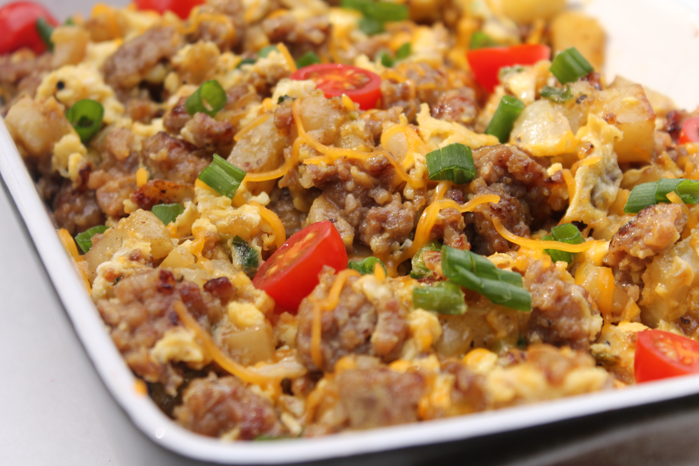

Breakfast Scramble

Description
Perfect for a meal prep filled with a lot of protein.
Ingredients
- 2 tablespoons of butter
- 8 ounces breakfast sausage
- 4 slices bacon, cut into small pieces
- 1/2 onion, diced
- 1 small russet potato, diced
- Kosher salt and freshly ground black pepper
- 1/4 cup half-and-half
- 6 large eggs
- 1/2 cup small-cubed Cheddar
- 4 green onions, sliced
Steps
- Melt the butter in a large skillet over medium-high heat. Add the sausage, bacon and onion and saute until the meat is cooked through and the onion is golden, about 8 minutes. Drain off the fat. Add the potato, sprinkle with salt and pepper and cook to warm the potato, about 3 minutes.
- Mix together the half-and-half, eggs and some salt and pepper in a pitcher or bowl until combined.
- Lower the heat under the skillet to medium low. Pour in the egg mixture and cook until soft, creamy curds begin to form, a few minutes. Add the cheese and green onions and cook, stirring, until the eggs are cooked and the cheese is almost totally melted, a few minutes more.